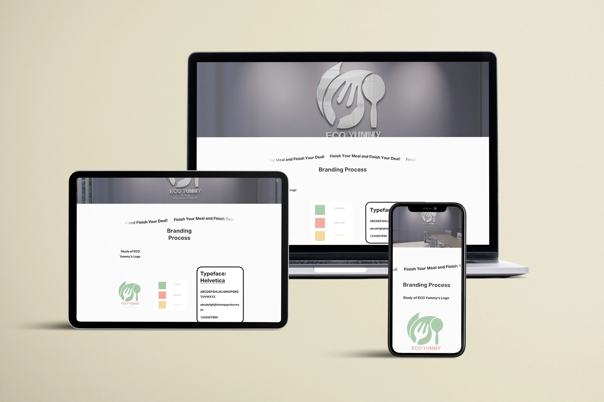
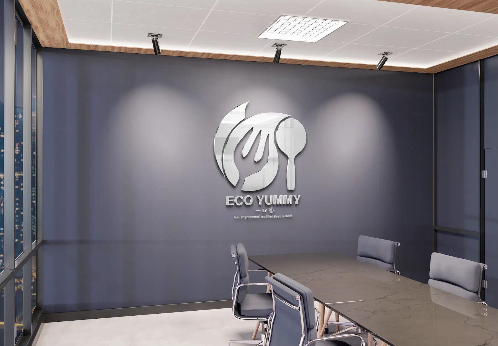

Sustainable Product Idea
Developed the concept around edible utensils as a more responsible alternative to single-use waste.
Sustainable Edible Utensil Brand
A sustainable brand concept exploring edible utensils, packaging design, and environmentally conscious consumer experiences.

EcoYummy is a conceptual product branding project built around edible utensils as an eco-friendly alternative to disposable plastic tableware.
The project connects product positioning, moodboard exploration, visual identity, packaging direction, and high-fidelity mockups into one cohesive brand presentation.
Role
Brand concept, logo direction, visual identity, packaging thinking, and presentation design.
Tools
Adobe Illustrator, Adobe Photoshop, and Procreate.
The challenge was to transform an environmental product idea into a brand that feels approachable for everyday consumers instead of overly technical or serious.
The design opportunity was to use playful naming, warm visual language, natural textures, and packaging direction to connect sustainability with a positive food experience.
Developed the concept around edible utensils as a more responsible alternative to single-use waste.
Used a warm, food-related, and playful direction to make the sustainable message easier to understand.
Applied the identity into presentation mockups to show how the brand could appear as a believable product.
EcoYummy is based on a simple idea: everyday utensils can be useful, edible, and environmentally responsible at the same time.
The identity needed to balance eco-conscious values with a fun and memorable food experience. This concept guided the name, logo style, color direction, packaging mood, and final mockup presentation.

The project moved from concept direction and visual research into identity design, packaging thinking, and high-fidelity presentation.
01
Defined the product idea around edible utensils, sustainability, food experience, and reducing single-use waste.
02
Explored natural textures, eco-friendly color palettes, food imagery, typography direction, and brand personality.
03
Developed the logo and visual direction, then applied the concept into mockups to present the brand in a polished product context.
A focused selection of visuals showing the EcoYummy branding process, from moodboard exploration to logo direction and product presentation.

The final EcoYummy concept presents a sustainable product idea through a clear, friendly, and approachable brand identity. The project demonstrates how design can move from concept direction and visual research into polished brand presentation.
01
Brand Identity
02
Packaging Direction
03
Sustainable Product Concept